Murata
Murata · Miyagi
Murata
Highlighted on the Miyagi map.
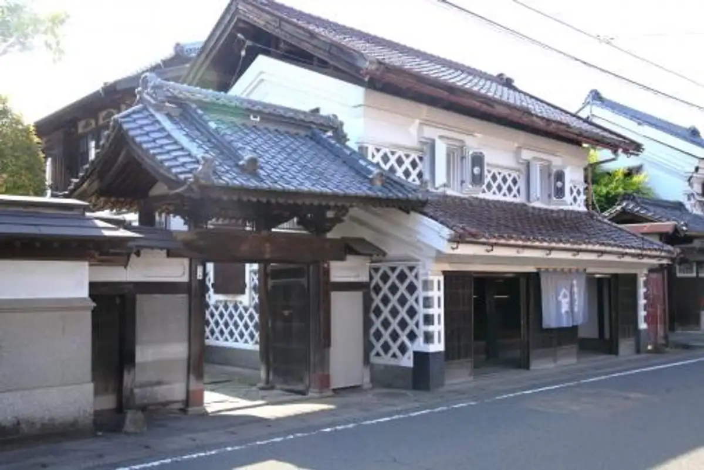
Stay
花小町
Hana Komachi
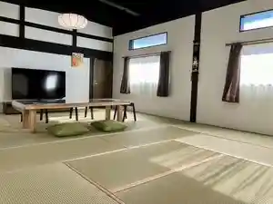
Dining
麺屋LUSH
LUSH
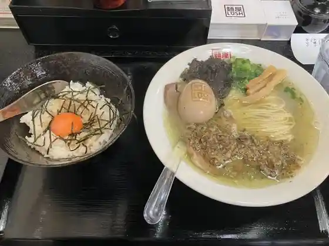
千寿庵
Chizu Iori
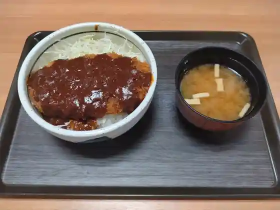
菅生パーキングエリア（上り線）フードコート
Sugou Paakingueria ( Nobori Sen ) Fuudokooto
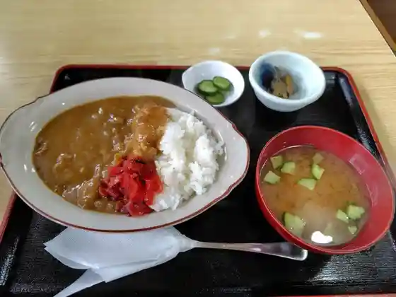
丸金食堂
Marukin Shokudo
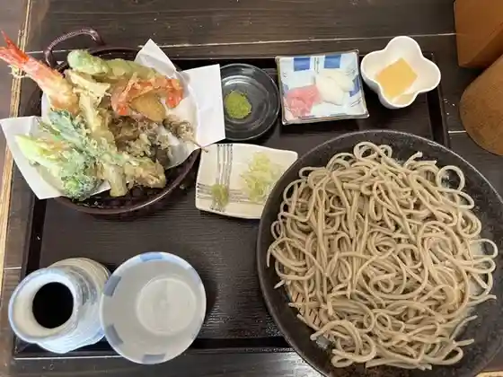
蕎麦玄
Soba Gen
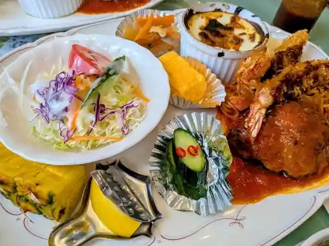
レストハウスリッキーズ
Resutohausurikkiizu
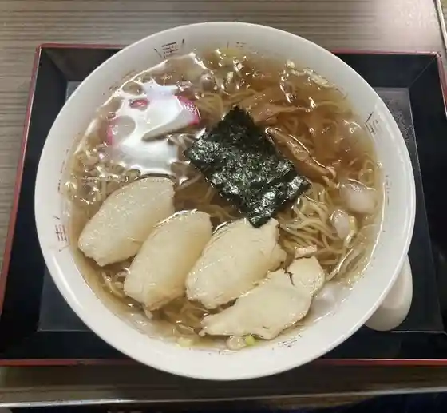
銀座食堂
Ginza Shokudo
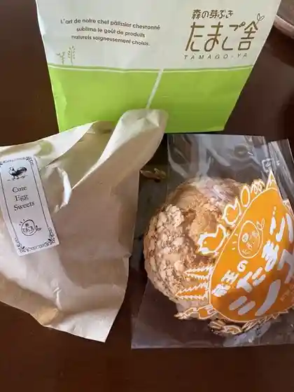
たまご舎 ファームファクトリー
Tamago Sha Faamufakutorii
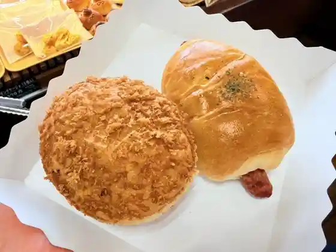
杜のパン工房
Mori No Pan Koubou
杜の牛たん
Mori No Ushi Tan
農家レストラン 森の栞
Nouka Resutoran Mori No Shiori
麦小屋
Mugi Koya
すごうでキッチン
Sugoude Kitchin
らーめんせん家 村田店
Raamensen Ie Murata Mise
一祥
Ichi Shou
カフェ バイ サークル
Kafe Bai Saakuru
麺屋だいず 村田店
Men Ya Daizu Murata Mise
菅生PA・上り ショッピングコーナー
菅生PA・上り ショッピングコーナー
蔵の町レストラン 城山
Kura No Machi Resutoran Shiroyama
海仙道楽
Umi Sendou Raku
みちのくいしんぼ
Michinokuishinbo
道の駅 村田
Michi No Eki Murata
木村屋菓子店
Kimura Ya Kashi Mise
菅生パーキングエリア（下り線） レストラン
Sugou Paakingueria ( Kudari Sen ) Resutoran
菅生パーキングエリア 下り 売店
Sugou Paakingueria Kudari Baiten
丹野屋菓子店
Tanno Ya Kashi Mise
SUGO CAFE
SUGO CAFE
Fes Coffee&林度カリー
Fes Coffee&
壱弐参 CAFE
CAFE
蔵TORIA Kitchen Yu
TORIA Kitchen Yu
そば処 金谷
Soba Tokoro Kanaya
和風レストラン 藤
Wafuu Resutoran Fuji
竹雀
Chikujaku
牛たん麦めし屋 梵天丸
Ushi Tan Mugi Meshi Ya Bonten Maru
菅生パーキングエリア （下り線）フードコート
Sugou Paakingueria ( Kudari Sen ) Fuudokooto
丹誠庵
Tansei Iori
cafe蔵人
cafe
喜楽
Kiraku
仙台南ゴルフクラブ
Sendai Minami Gorufukurabu
Takoyaki&Smile 村田店
Takoyaki&Smile
とんかつ花綵
Tonkatsu Hanazuna
麺や呑み処 もみじ庵
Men Ya Nomi Tokoro Momiji Iori
和食処 けやき
Washoku Tokoro Keyaki
万崎食堂
Man Saki Shokudo
レストラン クヌギ
Resutoran Kunugi
隠れ然房
Kakure Zen Bou
大廣食堂
Dai Kou Shokudo
中華厨房 炎
Chuuka Chuubou Honoo
布袋農園
Hotei Nouen
もつ家 八
Motsu Ie Hachi
まこと寿司
Makoto Sushi
岩手屋 まるいち酒店
Iwate Ya Maruichi Saketen
大沼酒造店
Oonuma Shuzou Mise
グリーンパール納豆本舗
Guriinpaaru Nattou Honpo
ふるさとおとぎ苑
Furusatootogi En
韮神や
Nira Kami Ya
焼き肉ハウス あらいわ
Yakiniku Hausu Araiwa
ほっともっと 村田町店
Hottomotto Murata Machi Mise
阿部屋菓子店
Abe Ya Kashi Mise
ミニストップ 村田沼辺店
Minisutoppu Murata Numabe Mise
なぬすてんの家
Nanusutenno Ie
志げる寿司
Kokorozashi Geru Sushi
デイリーヤマザキ 村田インター店
Deiriiyamazaki Murata Intaa Mise
本家かまどや 村田店
Honke Kamadoya Murata Mise
wak.farm
wak.farm
レストラン 和
Resutoran Wa
びいんず夢楽多
Biinzu Yume Raku Ta
むらた杵つき家
Murata Kine Tsuki Ie
みちのくに市 DATE-ICHIBA
DATE-ICHIBA
カフェバー キッピス
Kafebaa Kippisu
王ちゃん餃子
Ou Chan Gyouza
大衆割烹 すがわら
Taishuu Kappou Sugawara
茶どころ・み
茶どころ・み
かたりべ
Kataribe
Rest House Ricky s
Rest House Ricky s
Sejuan
Sejuan
Sugo Pa Nobori Gyutan Mugimeshiya Bontenmaru
Sugo Pa Nobori Gyutan Mugimeshiya Bontenmaru
Issho
Issho
Ramen Senya Murata
Ramen Senya Murata
Sobadokoro Kanay
Sobadokoro Kanay
Kenchan Chi
Kenchan Chi
Banzaki Shokudo
Banzaki Shokudo
Uruoitei
Uruoitei
Japanese Restaurant Fuji
Japanese Restaurant Fuji
Organic Food Kobo Sengoku Daimyo
Organic Food Kobo Sengoku Daimyo
Ippuku Chaya
Ippuku Chaya
Kappa
Kappa
Restauranttairin Satelite Miyagi
Restauranttairin Satelite Miyagi
Bondi Kitchen
Bondi Kitchen
Matsukaze Shokudo
Matsukaze Shokudo
Noevir Cosmetics Shibata West
Noevir Cosmetics Shibata West
Wood Pecker
Wood Pecker
Arabica
Arabica
Kameya
Kameya
Shop
Michi-no-Eki Murata
Road station with morning vegetables, soramame products, and Sendai-nan souvenirs
Sights
Murata Warehouse Townscape
Preserved kurazukuri warehouse streetscape known as Michinoku's little Kyoto
Sportsland SUGO
Motorsport circuit and event venue in Sugō, Murata
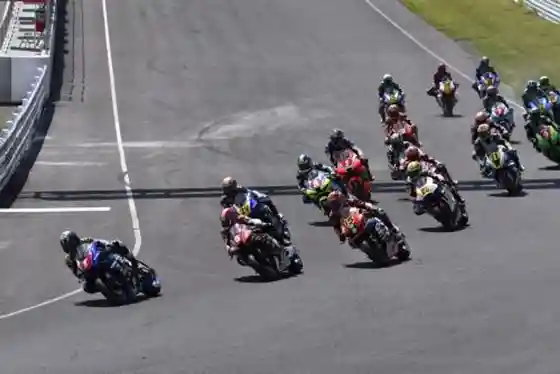
Murata Outdoor Activity Center
Town outdoor-education and camping base in the Adachi hills
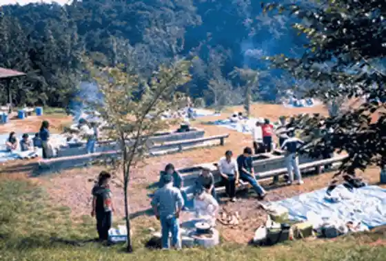
Murata History Mirai-kan
Local history museum covering Murata's warehouse-town heritage
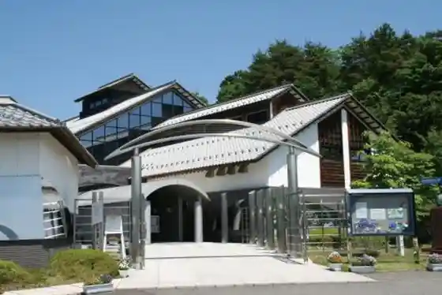
Yamasho Memorial Hall
Memorial hall in the historic town-center warehouse district
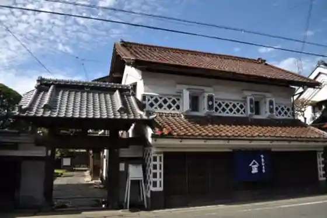
Ryuto-in Pond Garden
Temple stroll garden with a classic pond-and-rock composition
Ryuto-in Temple
Historic temple complex beside the pond garden
Oshū no Jatō Wisteria
Named wisteria tree — a local natural landmark